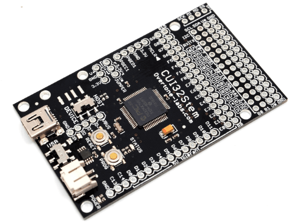
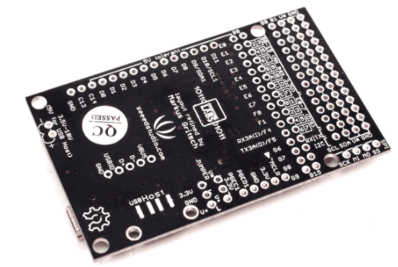
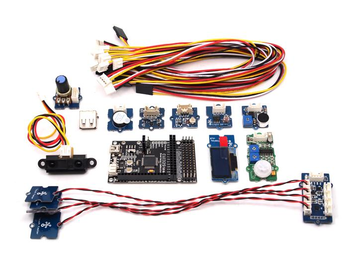

The Create USB Interface is an open source microcontroller board that can be programmed in C, BASIC, or Arduino languages. This latest version is called the CUI32Stem, which is designed to work ‘hand-in-hand’ with the GROVE prototyping system including a wide range of sensors and actuators. It utilizes a high-performance Microchip® PIC32 microcontroller, allowing programmable interaction with all sorts of user inventions, no soldering required! :)

High-resolution versions of these images are available here (Front Side) and here (Back Side).
Model: http://www.seeedstudio.com/depot/cui32stem-p-1100.html?cPath=132_208
The CUI32Stem can run Arduino code (compiled via the multiplatform ChipKIT MPIDE version of the Arduino IDE), and it also ships with a free Real-Time Operating System called StickOS pre-installed for the quickest path to programming the board (BASIC in a terminal window, no need to install any software on your computer). Both of these features make it very easy to get started if you are new to the world of Microcontroller Units (MCUs). For advanced users wishing to take full advantage of the powerful 32-bit microcontroller on the CUI32Stem*, C-language programs can of course be developed directly in Microchip MPLAB X, which is available for Windows, Mac OS X, and Linux.

CUI32Stem Dash Kit and the CUI32Stem Lab Kit.
The CUI32Stem is available to purchase alone (headers in a bag, not soldered on, providing a slim profile for low profile mounting locations), or as part of two different GROVE bundles (the first of which is shown above - a larger kit with wireless and more Grove elements is forthcoming). When shipped as part of a bundle, CUI32Stem boards will have pre-soldered header pins on them (allowing simple plug-on / plug-off for GROVE elements). See section below on 'how to buy' for more details. You can choose whether the "V* pins" should provide 3.3V or 5V via the "V* selector" on the board, to correlate to the proper voltage for the chosen GROVE element(s) - non-analog pins on the CUI32Stem are 5V-tolerant (even though the micrcontroller itself runs at 3.3V).
Some of the GROVE elements add wireless features to the CUI32Stem, including Bluetooth and simple 'Serial RF' modules, as well as an upcoming 'Serial WiFi' module that is in design now (not yet released). This Serial WiFi module allows the CUI32Stem to access the internet and/or use the Open Sound Control protocol (OSC) via 802.11 wireless. StickOS supports extremely simple wireless links (see example here) via an add-on board designed specifically for the CUI32Stem called ZigFlea, as well as the possibility for simple data logging to a USB memory stick. There is a footprint for a female USB connector (both on the top and bottom sides of the board, your choice which one to use - female USB connector purchased separately, or included in the bundles) that allows you to use USB-host mode - StickOS includes a FAT32 file system and supports logging data to a standard flash drive.
StickOS, which is pre-installed onto each shipped CUI32Stem, includes an on-board BASIC compiler, line editor, debugger, profiler, and in-line help system to create new firmware programs, save them and run them. All this can be done without having to install any software on your computer, just by using a standard terminal emulator for communication.
Arduino code can be compiled and run on the CUI32Stem using MPIDE (Multi-Platform Integrated Development Environment), which has its own forum. Finally, C-code can of course be compiled for the CUI32Stem via Microchip's own MPLAB X IDE and the corresponding C32 compiler, both free downloads. The 'Microchip Application Library', MAL is also free to download and has quite a few good examples. Further examples for C-code on a PIC32 can also be found [here http://www.schmalzhaus.com/UBW32/].
* For those interested in benchmarks, a standard Arduino has a Coremark of 18, while the CUI32Stem’s Coremark is 203 - this is with native C-code compiled with full optimization on both. While this performance will obviously not be seen while running BASIC code in StickOS, the tradeoff there is for ease of use. Arduino code will clearly get a bit closer to native C-code performance-wise. An example project that will show the performance of the CUI32Stem (written in Arduino language with MPIDE), is Philip Burgess’ open source project to build a self-contained polyphonic synthesizer using a PIC32. With piezo sensors as inputs, it implements a sample-playback polyphonic synthesizer including real-time audio effects. This project would not be possible on a standard Arduino, due to lack of sufficient internal memory – and adding a ‘wave-shield’ or similar to an Arduino in order to access external memory would make it difficult (if not impossible) to achieve the polyphony (overlapping musical notes/sounds), as demonstrated by Burgess.
CUI32Stem is designed to be a brain of the GROVE system
Arduino-code can be compiled for the CUI32Stem via MPIDE
Powerful 32-bit Microcontroller running at 80MHz
Easy to use Real-time Operating System pre-installed - StickOS:
StickOS BASIC Features
The CUI32Stem is part of the Microcontrollers For Everyone (MFE project), initiated by Rich Testardi creator of StickOS BASIC. The goal of this project is to encourage new sets of casual users, including students, hobbyists, and other non-career users, to learn about, have fun with, and build useful projects with state-of-the-art microcontroller technologies. The goal of MFE is explicitly not to hide or abstract the microcontroller technologies, but rather, to make them more approachable, transparent, and forgiving so that casual users can learn the same fundamental concepts that are used by career users, but without the career investment.
PIC32MX795F512H processor:
Logging into StickOS is as easy as:
1. If you're running Windows, download "CPUStick.inf" from here, then right-click on the file and select "Install"; Mac and Linux automatically know how to talk to the CUI32Stem, no installation required.
2. If you're running Windows or Linux, download a terminal emulator program (I use "Tera Term" on Windows and "minicom" on Linux); Mac has the built-in "screen" command.
3. Connect your CUI32Stem to the host computer with a USB cable.
4. Determine your COM port or device file name; in Windows you just look for CPUStick in Device Manager; in Mac, look for a /dev/tty.usbmodemXXX file, where XXX matches the Location ID of the CPUStick device in "About This Mac -> More Info... -> Hardware -> USB"; on Linux the device file name depends on the distribution.
5. Open the terminal emulator program on your system, and connect to the appropriate COM port or device file.
6. Press <Enter> for a prompt:
Welcome to StickOS for Microchip PIC32MX2-F128B v1.92c! Copyright (c) 2008-2012; all rights reserved. http://www.cpustick.com support@cpustick.com (checksum 0x8725) > _
Mac-specific help for beginners:
As mentioned above, all Macs come with a built-in "screen" utility - this is used within the Terminal application as described below:
First, open Terminal. If you've never used it before, it's under Applications/Utilities/Terminal. Next, type
ls /dev/tty.*
to get a list of all of your serial ports. Pick the one that you want to open. For example, my list looks like this:
/dev/tty.Bluetooth-Modem /dev/tty.Bluetooth-PDA-Sync /dev/tty.usbmodemfa141
Your CUI32Stem board will show up with a similar name to the last one, in that it will include 'tty.usbmodem' in the name.
So now you can just type 'screen portname' followed by return, to show StickOS on the screen. In my case, I typed: screen /dev/tty.usbmodemfa141
After this, you may need to push the enter key again to get the CUI32Stem to send back the welcome message from StickOS...
To quit the screen app, type control-A, then control-\.
Final note: This same procedure will also work when you have a GROVE Serial Bluetooth element connected to your CUI32Stem.
The only difference is that the name will instead have 'bluetooth' in it somewhere, of course... if you're not sure, just try them all until you find the right one.
Making interactive projects is easy with the CUI32Stem! There are literally thousands of examples available online in the form of Arduino projects that should only require small changes to compile (changing the pin names to correspond to those of the CUI32Stem, etc).
For those curious about BASIC - just starting out or want to give it a try ... How Easy is StickOS, Really?
The following examples, which give immediate results, encouragement, and feedback, use the CUI32Stem as an example of the kinds of trivial things you can do with StickOS. A more complete "Curriculum" will be developed to give examples of working with many of the GROVE elements in the near future.
1 of 5: Blink an LED
As the "hello world!" of embedded programming, let's get an LED to blink on pin 'rd0' of the CUI32Stem:
> 10 dim led as pin rd0 for digital output > 20 while 1 do > 30 let led = !led > 40 endwhile > run _
Line 10 of the program dimensions (declares) a variable named "led" that is bound to pin rd0 of the CUI32Stem, which is configured for digital output; from then on, any manipulation of the variable is immediately reflected at the pin. Lines 20-40 of the program form the main loop of the program. Line 30 simply inverts the state of the led on pin rd0 of the CUI32Stem, inside the loop. Oops! Something is wrong -- the LED isn't blinking but it seems to be half on... Oh! We forgot to add a delay! So let's stop the program with a <Ctrl-C>, fix the program by adding a 500ms delay, and then continue from where we left off:
<Ctrl-C> STOP at line 30 > 35 sleep 500 ms > cont _
Much better!
OK, now let's get a bit more interactive with the CUI32Stem and stop the program again with a <Ctrl-C>... Then we'll examine the state of the LED (i.e., print the value of the "led" variable) and then blink the LED by hand...
<Ctrl-C> STOP at line 35 > print led 0 > let led = 1 > print led 1 > let led = 0 > print led 0 >_
Notice that when we change the variable, the LED changes state!
2 of 5: Blink an LED with a Timer ISR
Now that our LED is blinking, let's graduate to using a timer ISR (Interrupt Service Routine) rather than a programmed loop -- this way we can do other things with the "main loop" in the future. We'll keep line 10 of the program, but wipe out all the lines that followed, list the program, and start from there:
> delete 20- > list 10 dim led as pin rd0 for digital output end > 20 configure timer 1 for 500 ms > 30 on timer 1 do let led = !led > 40 halt > run _
Line 10 still dimensions (declares) a variable named "led" that is bound to pin rd0 of the CUI32Stem, which is configured for digital output; line 20 configures timer #1 to pop every 500ms; line 30 enables the timer interrupt and says that every time the timer pops, we should run the statement "let led = !led" (if we had more work to do we could have called a subroutine); finally line 40 just puts the main loop to sleep -- we just service interrupts from then on! Wow, that worked on the first try! :-)
3 of 5: Blink an LED with an Output Compare Module
Now that we understand timers a bit, let's try using one of the CUI32Stem's "output compare module" peripherals so we can blink the LED without using the CPU at all! Again, these are all the same fundamental concepts used by career users!!!
We have to stop the program again with a <Ctrl-C>, and then we'll just do this at the command line (not even writing a program) because we're a bit unsure of ourselves...
<Ctrl-C> STOP at line 40 > dim hz as pin rd0 for frequency output > hz = 1 >_
The first line there dimensioned (declared) a variable named "hz" that is bound to pin rd0 of the CUI32Stem, which is configured to receive the output of an output compare module; from then on, any manipulation of the variable is immediately programmed as the output frequency, in Hz, of the output compare module. Wow, that is cool!!! Let's make it go faster:
> hz = 10 >_
And faster:
> hz = 100 >_
I want to hook up a buzzer to this thing, but before we go any farther, let's try another experiment...
4 of 5: Read a Potentiometer with an A/D Converter
For this experiment, we'll hook up the middle lead of a potentiometer to pin an0 of the CUI32Stem, and the outer leads of the potentiometer to ground and 3.3V (of course, you can just plug in a GROVE potentiometer element). Let's again do this at the command line (no program) so we can see how it works:
> dim pot as pin an0 for analog input > print pot 1876 >_
The first line there dimensioned (declared) a variable named "pot" that is bound to pin 'an0' of the CUI32Stem, which is configured for analog input thru the A/D converter; from then on, any reference of the variable reflects the current number of millivolts read on the pin! Now let's turn the pot a bit and try it again:
> print pot 1201 >_
Cool!!!
5 of 5: Tying It All Together -- An Analog to Frequency Converter!
OK, let's replace the LED on pin rd0 of the CUI32Stem with a small buzzer... And now let's write a program using all of the skills we just learned to create an "analog to frequency converter"! We'll start out by wiping out everything we've done so far with a "new" command, and then move from there:
> new > 10 dim buzzer as pin rd0 for frequency output > 20 dim pot as pin an0 for analog input > 30 configure timer 1 for 100 ms > 40 on timer 1 do let buzzer = pot > 50 halt > run _
Now turn the pot and listen to the buzzer -- it goes from 0 to 3300 Hz, updated from the pot every 100ms! We rock! :-)
Continuing (more advanced) StickOS examples below:
Installation of the MPIDE Multi-Platform IDE to compile Arduino code for the CUI32Stem is outlined here.
Simple C program using MPLAB which toggles the LED depending on a button press:
#define SYSCLK 80000000L #include <p32xxxx.h> #include <plib.h> int main(void) { SYSTEMConfigPerformance(SYSCLK); LATE = 0xFFFE; TRISE = 0xFFFE; while (1) { LATEbits.LATE0 = PORTEbits.RE7; } return 0; }
| Revision | Descriptions | Release |
|---|---|---|
| v0.9b | Initial public release | 16,Aug,2011 |
Click here to buy from Seeedstudio Bazaar.
The CUI32Stem board (no headers) alone: Model: http://www.seeedstudio.com/depot/cui32stem-p-1100.html?cPath=132_208
A "starter kit": (insert link to bazaar) Documentation wiki: CUI32Stem GROVE Dash Bundle, and
A "full kit": (insert link to bazaar) Documentation wiki: CUI32Stem GROVE Lab Buncle.
This documentation is licensed under the Creative Commons Attribution-ShareAlike License 3.0 Source code and libraries are licensed under GPL/LGPL, see source code files for details.
Copyright (c) 2008-2016 Seeed Development Limited (www.seeedstudio.com / www.seeed.cc){kind=link}
{kind=link}